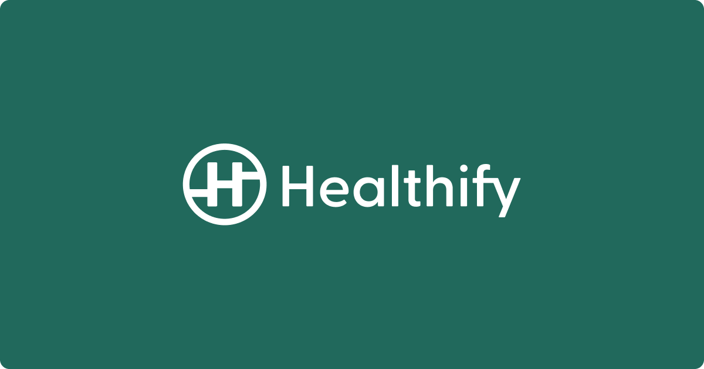

Healthify
Product Manager
US Charter Product + growth mission
- Leading the U.S. Product Charter at Healthify, and contributing to cross-functional initiatives across the organization.
- Drove $10K revenue within the first month by launching and optimizing multiple growth strategies through strategic A/B experiments
- Launched a chat-based coaching product after thorough market research, partnering with U.S. dietitians, and boosted MRR to $18K in Feb
- Boosted D3 retention to 45% from 20% by enhancing AI features and providing actionable user insights (food, sleep, workout & steps)
- Achieved $1M+ ARR through app UI/UX improvements, CRMs, PLG initiatives, CGM upsells, web acquisition funnels and engagement tactics
- Launched barcode scanning and improved Food Track adoption by 50%, also launched path feature and improved D7 retention by 10pp